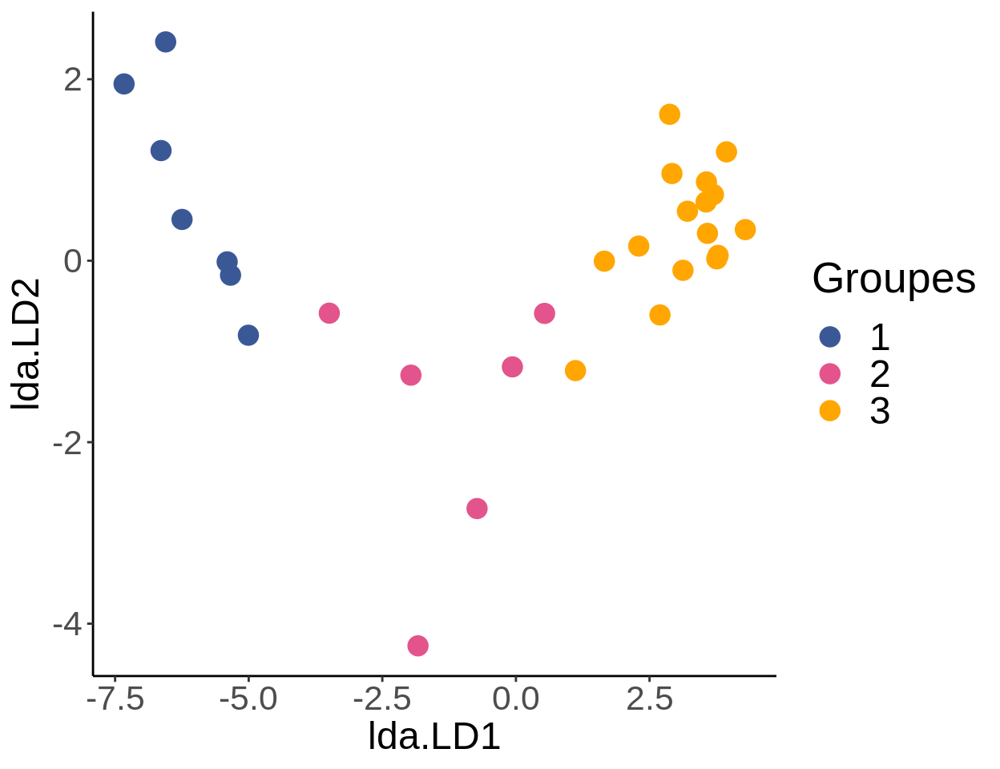

Chapitre 10 Analyse discriminante linéaire
L’analyse discriminante linéaire (LDA ou ADL) est une technique sous contrainte (canonique) qui divise une matrice de réponse en groupes en fonction d’un facteur en trouvant la combinaison de variables qui donne la meilleure séparation possible entre les groupes. Le regroupement est effectué en maximisant la dispersion entre les groupes par rapport à la dispersion à l’intérieur des groupes. Cela vous permet de déterminer dans quelle mesure votre ensemble de variables indépendantes explique un regroupement a priori, qui peut avoir été obtenu à partir d’une analyse de regroupement précédente (voir Atelier 9) ou à partir d’une hypothèse (par exemple, le regroupement est basé sur des sites à différentes latitudes ou différents traitements).
La LDA compile des fonctions discriminantes à partir de descripteurs centrés-réduits. Les coefficients obtenus quantifient la contribution relative des variables explicatives sur la discrimination des objets. Les fonctions d’identification peuvent être générées à partir des descripteurs originaux pour classifier de nouvelles données dans des groupes pré-définis. Il existe plusieurs applications utiles de cette capacité à prédire les regroupements, comme la prédiction de l’appartenance d’une espèce de poisson à un groupe selon sa morphologie. On pourrait aussi déterminer si un nouvel article concerne un écosystème terrestre, marin ou d’eau douce selon une classification existante d’articles dans ces biomes effectuée à partir de mots clés de résumés.
10.1 LDA dans R: Rivière Doubs
Nous continuerons à travailler avec le jeu de données de poissons de la rivière Doubs pour démontrer comment implémenter une analyse discriminante linéaire dans R.
10.1.1 Créer des groupes a priori
Premièrement, nous voulons effectuer une classification à priori qui est indépendante des variables environnementales. Généralement, les variables environnementales changent avec la latitude. Cette notion nous porterait peut-être à poser la question suivante: Si on classifie les sites de la rivière Doubs selon la latitude, à quel point les variables environnementales expliquent-elles bien ces groupements? Pour répondre à cette question, nous classifierons les données d’abondance de poissons de la rivière Doubs en fonction de la latitude pour déterminer à quel point les variables environnementales expliquent ces groupements. Les groupes seront déterminés en divisant l’étendue des latitudes également entre trois groupes, et en assignant chaque site à sa classe de latitude.
Commençons par charger les données spatiales des sites:
# charger les données spatiales des sites Doubs:
spa <- read.csv("data/doubsspa.csv", row.names = 1)
spa$site <- 1:nrow(spa) # assigner un chiffre par site
spa <- spa[-8, ] # enlever le site #8Ensuite, on peut classifier les sites dans 3 groupes de latitudes:
# classification a priori
spa$group <- NA # créer colonne 'group'
spa$group[which(spa$y < 82)] <- 1
spa$group[which(spa$y > 82 & spa$y < 156)] <- 2
spa$group[which(spa$y > 156)] <- 3Visualisons ces regroupements par latitude:
ggplot(data = spa) +
geom_point(aes(x = x,
y = y,
col = as.factor(group)),
size = 4) +
labs(color = "Groupes",
x = "Longitude",
y = "Latitude") +
scale_color_manual(values = c("#3b5896", "#e3548c", "#ffa600")) +
theme_classic() + # configuration
theme(axis.title = element_text(size = 18),
axis.text = element_text(size = 16),
legend.title = element_text(size = 20),
legend.text = element_text(size = 18))Nous avons maintenant nos groupes a priori. Normalement, nous devons vérifier que les données respectent une condition nécessaire pour l’application d’une LDA: que les matrices de covariance intra-groupe des variables explicatives doivent être homogènes. Au besoin, on peut utiliser la fonction betadisper() du paquet vegan. Pour ce faire, nous utiliserions la fonction betadisper() du paquet vegan pour vérifier l’homogénéité multivariée des variances au sein du groupe avant de procéder, comme vu dans Borcard, Gillet, and Legendre (2011). Pour les besoins de cet atelier, nous allons passer directement à l’analyse LDA.
10.1.2 LDA dans R
Nos sites sont maintenant réorganisés en groupes qui sont les plus distincts possibles, à partir des variables environnementales. On peut visualiser les les sites réorganisés à partir de la LDA, comme suit:
# prédire les groupes à partir de la LDA
lda.plotdf <- data.frame(group = spa$group, lda = predict(LDA)$x)# Visualiser les sites réorganisés à partir de la LDA
ggplot(lda.plotdf) +
geom_point(aes(x = lda.LD1,
y = lda.LD2,
col = factor(group)),
size = 4) +
labs(color = "Groupes") +
scale_color_manual(values = c("#3b5896", "#e3548c", "#ffa600")) +
theme_classic() + # configuration de la figure pour la rendre plus belle
theme(axis.title = element_text(size = 18),
axis.text = element_text(size = 16),
legend.title = element_text(size = 20),
legend.text = element_text(size = 18))
10.1.3 Exactitude du groupement
Une fois que nous avons exécuté la LDA, nous pouvons utiliser le résultat pour déterminer :
- Comment les sites sont groupés selon les données environnementales, dans le cadre de la LDA;
- Les probabilités postérieures de l’appartenance des sites aux groupes;
- Le pourcentage de classification correcte basé sur notre groupement latitudinal.
# classification des objets en fonction de la LDA
spe.class <- predict(LDA)$class
# probabilités que les objets appartiennent à chaque groupe
# a posteriori
spe.post <- predict(LDA)$posterior
# tableau des classifications a priori et prédites
(spe.table <- table(spa$group, spe.class))## spe.class
## 1 2 3
## 1 7 0 0
## 2 0 6 0
## 3 0 0 16## 1 2 3
## 1 1 1Tous les sites ont été correctement classifiés (proportion de classification correcte = 1) dans leur groupe de latitude en fonction des variables environnementales.
10.1.4 Prédictions
On peut maintenant utiliser la LDA pour classifier de nouveaux sites dans les groupes de latitude, basé sur la relation que nous avons établie entre notre groupement latitudinal et les variables environnementales à l’aide de la LDA.
Essayons de prédire la classification de cinq nouveaux sites à l’aide de la LDA:
Let us predict the groupings of five new sites dans le jeu de données simulé classifyme.csv en utilisant l’objet LDA que nous avions obtenu ci-dessus. Pour ce faire, nous utiliserons la fonction predict().
# charger les nouvelles données
classify.me <- read.csv("data/classifyme.csv", header = TRUE)
# enlever das
classify.me <- subset(classify.me, select = -das)
# prédire le groupement des nouvelles données
predict.group <- predict(LDA, newdata = classify.me)
# prédire la classification pour chaque site
predict.group$class## [1] 1 1 1 3 3
## Levels: 1 2 3Nos nouveaux sites, dans l’ordre, ont été classés dans les groupes 1, 1, 1, 3 et 3 respectivement.
10.2 Défi 5
Créez quatre groupes de latitude avec des étendues égales à partir des données mite.xy. Ensuite, faites une LDA sur les données environnementales mite.env des acariens (SubsDens et WatrCont). Quelle proportion de sites ont été classifiés correctement au groupe 1? Au groupe 2?
Pour commencer, chargez les données mite.xy:
Rappel de fonctions utiles:
Étape 1: Créer quatre groupes de latitude avec des étendues égales.
# numéroter les sites
mite.xy$site <- 1:nrow(mite.xy)
# trouver une étendue égale de latitudes par groupe
(max(mite.xy[, 2]) - min(mite.xy[, 2]))/4## [1] 2.4# classifier les sites dans 4 groupes de latitude
mite.xy$group <- NA # nouvelle colonne 'group'
mite.xy$group[which(mite.xy$y < 2.5)] <- 1
mite.xy$group[which(mite.xy$y >= 2.5 & mite.xy$y < 4.9)] <- 2
mite.xy$group[which(mite.xy$y >= 4.9 & mite.xy$y < 7.3)] <- 3
mite.xy$group[which(mite.xy$y >= 7.3)] <- 4Étape 2: Faire la LDA.
Étape 3: Vérifier l’exactitude du groupement.
# classification des objects en fonction de la LDA
mite.class <- predict(LDA.mite)$class
# tableeau de classifications (prior versus predicted)
(mite.table <- table(mite.xy$group, mite.class))## mite.class
## 1 2 3 4
## 1 9 4 2 0
## 2 2 11 4 0
## 3 1 2 14 2
## 4 0 0 3 16On peut maintenant répondre à la question du défi avec cette partie du code:
## 1 2 3 4
## 0.6000000 0.6470588 0.7368421 0.8421053Alors, quelle proportion de sites ont été classifiés correctement au groupe 1? Au groupe 2?
- 60% des sites ont été classifiés correctement au groupe 1, et 64.7% au groupe 2.
References
Borcard, Daniel, François Gillet, and Pierre Legendre. 2011. Numerical Ecology with R. Use R! New York: Springer-Verlag. https://doi.org/10.1007/978-1-4419-7976-6.